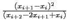

suivant: Résolution des systèmes d'équations
monter: Résolution d'équations avec fsolve
précédent: fsolve avec l'option secant_solver
Table des matières
Index
La méthode de Steffenson est la plus rapide de toutes les méthodes.
Elle combine la méthode de Newton avec l'accéleration du "delta-deux"
d'Aitken : avec la méthode de Newton on obtient la suite xi et
l'accéleration de convergence produit la suite :
Ri = xi - 
On tape :
fsolve(cos(x)=x,x,0,steffenson_solver)
On obtient :
0.739085133215
On tape :
fsolve(cos(x)=x,x,-1..1,steffenson_solver)
On obtient :
0.739085133215
Documentation de giac écrite par Renée De Graeve